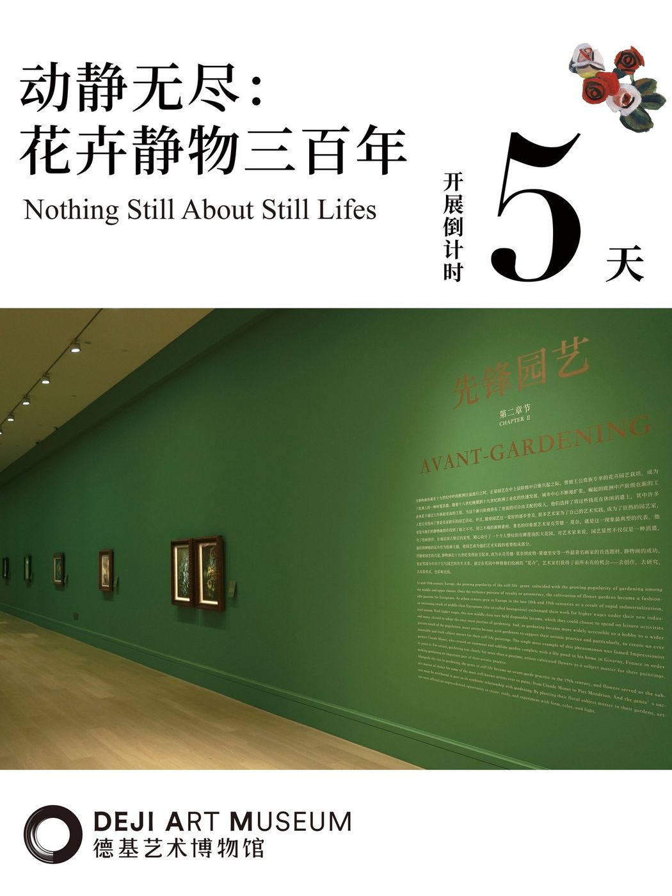

掌勺产品画册
You can be anyone you want to be.
好奇心是我的起点。我是《半拿铁》的忠实听众，喜欢听一家公司怎样起势、怎样掉队；遇到好用的产品，会琢磨它为什么让人愿意留下来。轮到自己做，我先走近用户把问题拆透，再亲手写 PRD、做原型，日常和 Codex、Claude、Cursor 协作，用代码快速验证想法。
做 AI 产品时，我习惯追问三件事：模型该负责什么？出错时如何兜底？效果怎样衡量？从规则与模型分工，到评测集与 Badcase 复盘，我边做边学，坚持把每次迭代做出依据。
查看简历每个项目都从一个真实问题出发：先拆清用户与场景，再决定 AI 负责什么，最后用数据验证。
病区里的需求很多，先解决哪几个？
业务问数的难点，在于数字答出来后能否被信任。
听过的好内容，怎样才能留下来、用起来？
产品画册、品牌符号与海报：好产品也需要好表达，我在这里练审美与信息层级。

